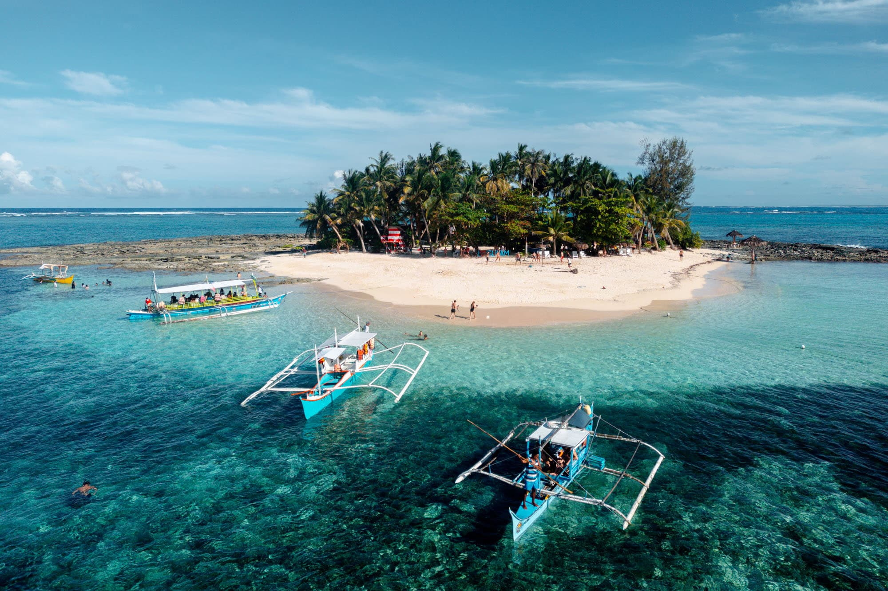
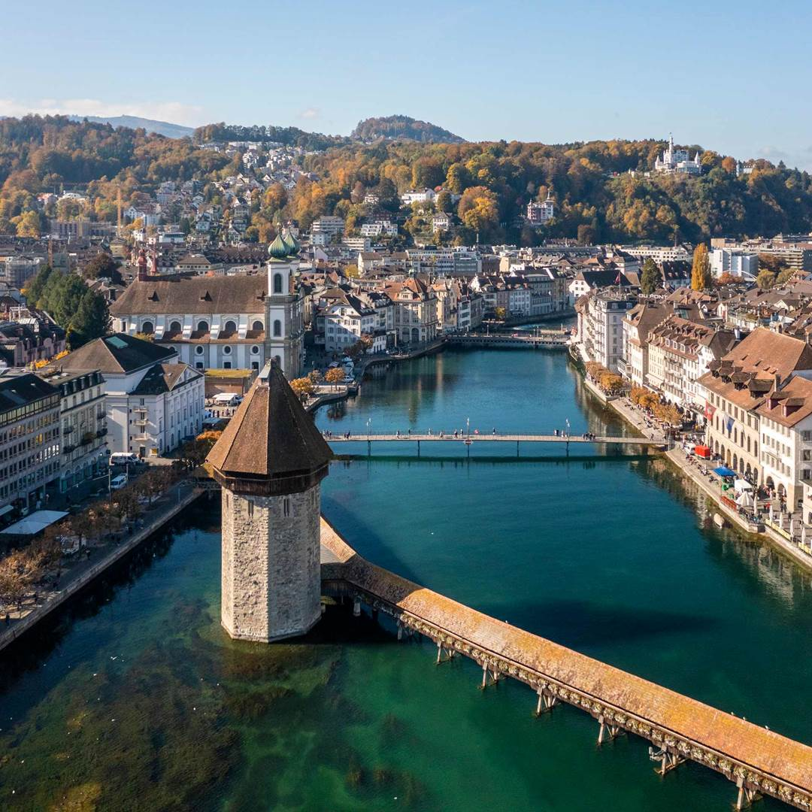

Kyoto, Japan
Kyoto, the former imperial capital of Japan, is a city where ancient traditions seamlessly blend with modern life. Home to over 2,000 temples and shrines, traditional wooden houses, and meticulously maintained gardens, Kyoto offers visitors an authentic glimpse into Japan's rich cultural heritage and spiritual heart.
Whether you're exploring the Arashiyama Bamboo Grove, attending a tea ceremony, or admiring the seasonal beauty of cherry blossoms or autumn leaves, Kyoto provides a peaceful, immersive experience unlike any other city in Japan.
Things to Do in Kyoto
| Activity |
Location |
Description |
| Visit Kinkaku-ji |
Northwest Kyoto |
A stunning Zen temple covered in gold leaf, surrounded by beautiful gardens. |
| Explore Fushimi Inari Taisha |
Fushimi Ward |
Famous for its thousands of vermillion torii gates, this shrine is dedicated to the Shinto god of rice. |
| Stroll through Arashiyama Bamboo Grove |
Arashiyama District |
A breathtaking bamboo forest that offers a serene escape from the city. |
How to Get There
-
Go to NAIA Terminal 3 from Marikina
- Book a grab, taxi, or private car
- Take a direct flight to Kansai International Airport (KIX) in Osaka (~4–5 hours)
-
From KIX, ride the JR Haruka Express to Kyoto Station (75 minutes)
- Alternatively, take a bus or local train
3 Day Itinerary
- Day 1: Arrive in Kyoto, explore Gion District in the evening
- Day 2: Visit Fushimi Inari Shrine and Kinkaku-ji
- Day 3: Stroll through Arashiyama Bamboo Grove, Tenryu-ji Temple, and Iwatayama Monkey Park
Tokyo, Japan

Tokyo is a dynamic blend of traditional temples and cutting-edge technology. From sushi bars to anime culture, Tokyo is a sensory feast for every traveler.
Whether you're exploring the historic Asakusa district, shopping in Shibuya, or enjoying the tranquility of Ueno Park, Tokyo offers a unique experience that captures the essence of Japan's past and future.
Things to Do in Tokyo
| Activity |
Location |
Description |
| Visit Tokyo Skytree |
Sumida |
One of the tallest towers in the world offering panoramic city views. |
| Shop in Shibuya |
Shibuya District |
Experience Tokyo’s bustling youth culture and the iconic Shibuya Crossing. |
| Explore Senso-ji Temple |
Asakusa |
Tokyo’s oldest temple, famous for its giant red lantern and Nakamise shopping street. |
How to Get There
-
Travel from Marikina to NAIA Terminal 3
- Book a Grab or take a private car or taxi
- Allow for 1–1.5 hours of travel time depending on traffic
-
Take a direct flight from NAIA to Narita or Haneda Airport (Tokyo)
- Flight time is around 4–5 hours
-
From the airport, take the train or bus to central Tokyo
- For Narita: Narita Express (N'EX) or Keisei Skyliner
- For Haneda: Tokyo Monorail or Keikyu Line
3 Day Itinerary
-
Day 1: Arrive in Kyoto, explore the traditional streets of Gion District in the evening, and enjoy local Kyoto cuisine.
-
Day 2: Visit Fushimi Inari Taisha early morning, then head to Kinkaku-ji (Golden Pavilion) in the afternoon.
-
Day 3: Begin your day at Arashiyama Bamboo Grove, continue to Tenryu-ji Temple, and hike to Iwatayama Monkey Park for panoramic views.
Siargao, Philippines

Siargao is a tropical paradise known as the surfing capital of the Philippines. Beyond its waves, it offers serene lagoons, lush coconut groves, and island-hopping adventures.
Whether you're catching waves at Cloud 9, exploring the caves of Sohoton Cove, or relaxing on Naked Island, Siargao gives you a perfect mix of thrill and tranquility.
Things to Do in Siargao
| Activity |
Location |
Description |
| Surf at Cloud 9 |
General Luna |
One of the most famous surf spots in the world with a beautiful boardwalk. |
| Island hopping |
Guyam, Daku, and Naked Islands |
Visit three unique islands perfect for swimming, relaxing, and snorkeling. |
| Sohoton Cove tour |
Bucas Grande Islands |
A magical place filled with caves, lagoons, and jellyfish sanctuaries. |
How to Get There
-
Travel from Marikina to NAIA Terminal 3
- Book a Grab or take a private car or taxi
- Travel time: ~1 to 1.5 hours depending on traffic
-
Fly from Manila to Siargao Airport (Sayak Airport)
- Direct flights available; ~2 hours flight time
-
Take a van or tricycle to General Luna (main tourist area)
- Approx. 45 minutes from the airport
3 Day Itinerary
-
Day 1: Arrive in Siargao, settle in General Luna, and catch the sunset at Cloud 9.
-
Day 2: Island hopping to Guyam, Daku, and Naked Islands with a seafood lunch.
-
Day 3: Explore Sohoton Cove or try more surfing; fly back in the afternoon or next morning.
Lucerne, Switzerland

Lucerne, Switzerland, is a postcard-perfect city nestled by Lake Lucerne and surrounded by the snow-capped peaks of the Swiss Alps. With its well-preserved medieval architecture, sparkling waters, and breathtaking scenery, Lucerne is an ideal destination for travelers seeking both natural beauty and cultural heritage.
Explore cobbled streets, take a serene boat ride on the lake, and marvel at landmarks like the Chapel Bridge and the Lion Monument. Lucerne offers the quintessential Swiss experience with a magical alpine backdrop.
Things to Do in Switzerland
| Activity |
Location |
Description |
| Ride the Glacier Express |
Zermatt to St. Moritz |
A scenic train journey through the heart of the Swiss Alps. |
| Explore Old Town |
Lucerne |
Charming medieval architecture and the iconic Chapel Bridge. |
| Visit the Matterhorn |
Zermatt |
One of the most iconic peaks in the Alps; great for photos and skiing. |
How to Get There
-
Travel from Marikina to NAIA Terminal 3
- Book a Grab or take a private car or taxi
- Allow for 1–1.5 hours of travel time depending on traffic
-
Take an international flight from NAIA to Zurich Airport (ZRH)
- Flight time: ~14–16 hours (1 stop via Middle East or Asia)
-
From Zurich, take a train to Lucerne (~1 hour)
- Swiss Federal Railways (SBB) offers direct, scenic rides
3 Day Itinerary
-
Day 1: Arrive in Zurich, take a walk around Lake Zurich, and explore Bahnhofstrasse.
-
Day 2: Head to Lucerne and visit the Lion Monument, Chapel Bridge, and enjoy a scenic boat ride on Lake Lucerne.
-
Day 3: Take a day trip to Mount Pilatus or Mount Rigi for panoramic alpine views before returning to Zurich.
Palawan, Philippines

Palawan is a tropical paradise in the Philippines known for its crystal-clear turquoise waters, dramatic limestone cliffs, and biodiversity. From island hopping to exploring underground rivers, Palawan offers unforgettable natural beauty and adventure.
Visit iconic spots such as El Nido's Big Lagoon, the UNESCO-listed Puerto Princesa Underground River, and the pristine beaches of Coron. Whether you’re snorkeling, diving, or simply relaxing, Palawan is a must-see destination.
Things to Do in Palawan
| Activity |
Location |
Description |
| Island Hopping |
El Nido |
Tour the Big Lagoon, Secret Beach, and Shimizu Island by boat. |
| Underground River Tour |
Puerto Princesa |
Explore the world-renowned subterranean river via paddle boat. |
| Snorkeling & Wreck Diving |
Coron |
Swim among coral reefs and WWII shipwrecks. |
How to Get There
-
Travel from Marikina to NAIA Terminal 3
- Book a Grab or take a private car or taxi
- Allow for 1–1.5 hours of travel time depending on traffic
-
Take a domestic flight to Puerto Princesa or El Nido Airport
- Flight time: ~1 hour and 20 minutes to Puerto Princesa or 1.5 hours to El Nido
- Book through AirSwift for El Nido or local carriers for Puerto Princesa
-
Take a van, boat, or tricycle depending on your final destination
- Transfers available to El Nido, Coron, or other island resorts
3 Day Itinerary
-
Day 1: Arrive in El Nido, relax at Nacpan Beach, and enjoy sunset views.
-
Day 2: Island Hopping Tour A – explore Big Lagoon, Secret Lagoon, and 7 Commandos Beach.
-
Day 3: Optional hike to Taraw Cliff for a panoramic view, then shop for souvenirs before flying back.